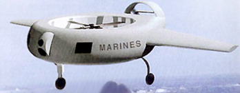

1995

Am 24. März 1995 taucht der japanische Roboter "Kaiko" 10911 Meter und 40 Zentimeter ins Challengertief des Marianengrabens hinab. Das US-Miltär stellt 'Cypher' vor, einen ferngesteuerten Flugroboter, der sich mit 50 Stundenkilometern bewegt, mit Tag- und Nachtsensoren, einem lasergesteuerten Entfernungsmesser und einer Hochleistungs-Überwachungskamera ausgerüstet ist.
